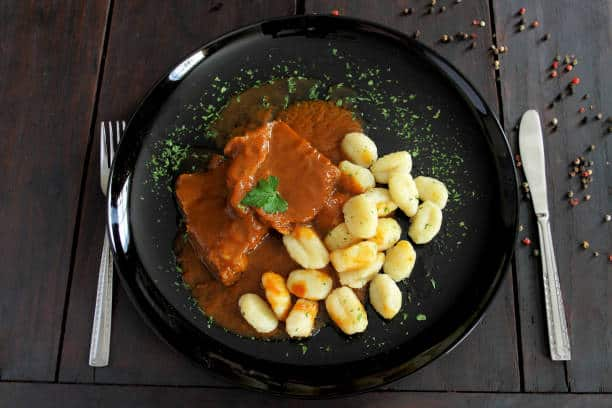

PASTICADA

INGREDIENTS
- 2-3 pounds of beef chuck, cut into 2-inch cubes
- 1/2 cup of pancetta or bacon, diced
- 2-3 onions, chopped
- 4-5 garlic cloves, minced
- 1/2 cup of red wine vinegar
- 1/2 cup of red wine
- 2 tablespoons of tomato paste
- 2-3 bay leaves
- 1 teaspoon of dried thyme
- 1 teaspoon of dried rosemary
- 1 teaspoon of sweet paprika
- 1/2 teaspoon of ground cloves
- 1/2 cup of beef broth
- 1-2 tablespoons of olive oil
- Salt and pepper to taste
INSTRUCTIONS
- Preheat your oven to 300°F (150°C).
- Heat the olive oil in a large oven-safe pot over medium-high heat.
- Add the pancetta or bacon and cook until it is crispy.
- Add the onions and garlic and sauté until the onions are translucent.
- Add the beef and brown it on all sides.
- Add the red wine vinegar and red wine, and cook for a few minutes until the liquid has reduced by half.
- Add the tomato paste, bay leaves, thyme, rosemary, paprika, ground cloves, and beef broth.
- Season with salt and pepper to taste.
- Cover the pot with a lid and place it in the preheated oven.
- Cook for 2-3 hours, or until the beef is tender and falls apart easily with a fork.
- Remove the bay leaves and serve the pasticada hot, garnished with chopped parsley or grated
Parmesan cheese, if desired.